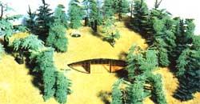
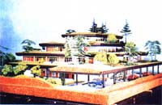
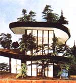
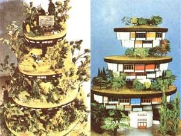
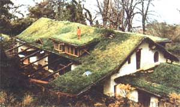
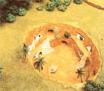
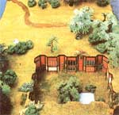

In amongst the testimonial from the Central American missionary who uses MOTHER as his chief teaching aid when working with the most primitive tribes still living in his section of the jungle ... and the correspondence from the sheep station in Australia ... and the mail from the wholistic gardeners, Alaskan sourdoughs, New Mexico back-to-the-landers, and all the rest of MOTHER's people the other day ... we found yet another interesting letter.
It was from Venice, Italy and it was from a world traveling artist/Inventor who calls himself Hundertwasser. "Your article about the grass roofOfMr. Davis in MOTHER NO. 46 is very interesting," the letter began. 'I've waited for the grass roof house to happen for a very long time. I was working on these and other ecological solutions sinceabout 20 years and I am sending you a short documentation. "
Well now. That "short documentation" contained some very good ideas and color photographs of models of sod-roofed and underground buildings (even one real sod-roofed house) that we thought you'd like to see. So here are a new of those ideas and photos.
This is a house for one family only, so totally integrated into nature that it is practically invisible. This makes it particularly useful for farmers or in landscape preserves.
The front of the house faces the sun and the roof turns to the cold. One can walk through the landscape without realizing that one walks on roofs.
Such a house is very light and sunny ... more so than a normal house because this one has large south-facing windows and skylights which let in the sun from above.
The ventilation and insulation of this house are excellent too, and the building is cool in summer and warm in winter. The house is more comfortable to live in than an ordinary one. It is safer to live in. And there is nothing more beautiful than to go for a walk on one's own roof.
This is a practical example of an ecologically sound house that is no longer a foreign body in its surroundings. The horizontal belongs to nature, the vertical to man. Wherever the snow and rain falls, vegetation must be allowed to grow free. Roofs must become forests and roads green valleys. The relationship between man and nature must become a religious one. Only if you love the tree as you love yourself will you survive.
This house recycles all the used water from its bathrooms and sinks. Polluted water is pumped up onto the roof by--perhaps-a windmill. The water then flows down in a spiral ... seeping, as it goes, through bulrushes, reeds, water hyacinths, and grass. It arrives at the bottom almost clean ... ready to be reused, or pumped to the top again for another trip down through this beautiful, natural purification plant.
At the same time, household humus toilets -composting toilets-provide new soil for the roof's vegetation. This house does not pollute the environment. Instead, it transforms liquid and solid waste on the spot into pure water and humus. This dwelling is a part of nature.
In this "high meadow house" or "woodland skyscraper", the houses are hanging underneath the meadows. When you look out your windows, you can see other hanging woodlands below.
Why should only people be piled up in stories in the cities? It is quite feasible to have woodlands, meadows, parks, gardens, and other green spaces in the center of towns too ... if you arrange them in floors above each other.
Such an arrangement is less expensive than you think. Although it is more expensive to construct buildings of this kind, in reality they become much less expensive than the skyscraper city housing that we now build.
How? Start by deducting the modern, sterile, concrete city's bills for bad health, pollution and the ills it brings, doctors, druggists, and psychiatrists. There will be less suicides in a city of tower gardens. Its residents will spend less for winter fuel and summer air conditioning. They will spend less for plumbing and sewage, artificial purification plants, and garbage disposal when their water is cleaned naturally on their own roofs and their solid waste is processed in composting toilets.
The people who live in tower gardens will spend less for roof repairs. They will save money on vacuum cleaners because there will be less dust in the air. They will not spend as much on vacations because it will be more fun to stay home. There will be more oxygen in the city's air if its roofs are turned into parklands. The people who live there will save money by picking apples off their own roofs. Their homes will be quieter and will shield them from radiation.
There will be more happiness and beauty in such a city. Birds, butterflies, dragonflies, and other wildlife will return to the center of these towns, settle on your terrace, and become your neighbors. Cows, sheep, and other animals can be brought in to graze the roofs. You will have the satisfaction of cultivating a garden on your own roof ... or letting your vegetation "run wild".
Compare all this with life in the average sterile modern city built of concrete.
When in New Zealand, I met the architect Ivan Tarulevicz, who has completed a most interesting house, it is situated on an inlet and is a beautiful wooden building. Its roof is topped with a rubber sheet one millimeter thick that is covered by 10 centimeters of soil.
The earth on the roof was sprayed with a mixture of liquid fertilizer and grass seed. Result: A wonderful lawn has grown on top of the house and, from time to time, sheep come to graze on it.
The people who live in the building are very happy and their children say to their classmates, "We have a proper roof, not a tin one." In New Zealand, you see, roofs are mostly made of tin. Thus, what the children mean is, "We have a proper living roof, not a dead one like yours." The idea has penetrated the children's consciousness.
In some parts of China and in Tunisia at the edge of the Sahara, there are underground towns and villages. These "houses in negatif" are arranged around courtyards sunk into the ground, and the dwellings open into the courtlike pits. I have visited such homes myself in Tunisia and, despite the African heat, it was so cool inside I had to wear a sweater. These dwellings are perfectly air conditioned: Cool on the hottest day and warm during the winter months.
If you take a walk "in" one of these villages . . . you don't see the village. This is quite unusual. In order to see the houses ... you must look down, not up as you are accustomed to doing. A traveler passing through such a town sees smoke, but no houses.
[1] A grass roof produces oxygen.
[2]A grass roof catches city dust and dirt and changes it into soil.
[3] You feet sheltered-body and soul-under a grass roof.
[4] A grass roof is soundproof. It creates quietness and peace.
[5] Grass roofs work like air conditioners. They save fuel in the winter and do away with the need for air conditioning during the summer.
[6] A grass roof provides protection against all kinds of fallout, radiation, and fire.
[7] A grass roof can purify water. Polluted water can become 95% clean and can be reused after it has seeped through plant roots and foliage and the earth.
[8] Such a natural roof can also produce food in limited quantities. In Scandinavia cattle, sheep, and goats graze on grass roofs. Vegetables, even fruit trees, have been planted on roofs in Vienna and New York City. Besides, a cherry harvested from your own roof is worth ten times what the same fruit is worth from a store.
[9] A grass roof is an ideal depository for the humus soil taken from a household composting toilet. It makes it possible for you to recycle your own wastes into something valuable again. A house with a grass roof can be a closed recycling circuit.
[10] There is nothing more beautiful than a grass roof. BEAUTY IS ITS MOST IMPORTANT FEATURE. PUT ONE ON YOUR HOUSE AND WATCH THE BUTTERFLIES COME BACK.
|
 |
 |
 |
|
 |
 |
 |
|
 |
|
|